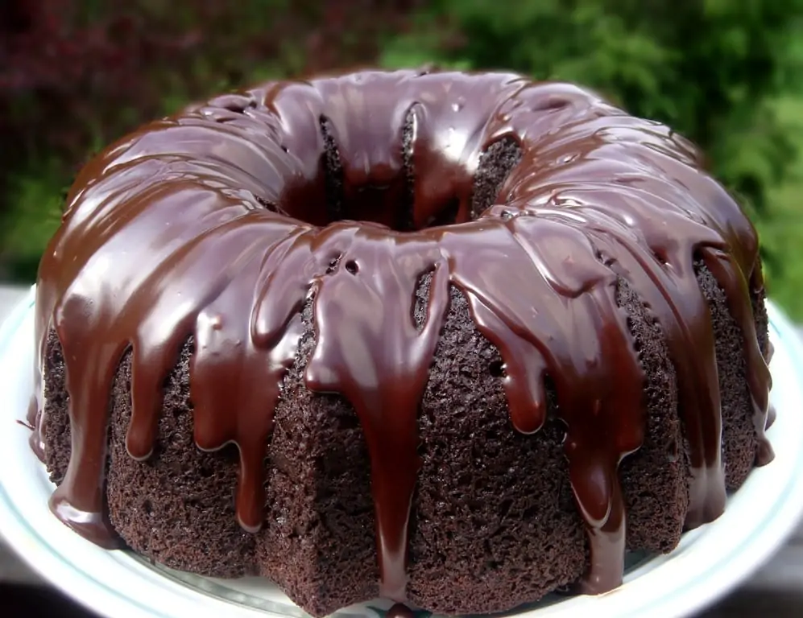

< Back to recipes list
Grandma's Brownie Cake
Recipe by Sweet & Savory

When you were a kid, did your grandma have any secret recipes that she'd only pull out on special occasions?
Chances
are, the answer is a resounding yes—and those recipes were probably all of the family favorites. It's no secret that
when your grandma makes her favorite recipes, everyone in the family is going to want seconds. Although this rule
definitely holds true for dinner recipes as well, the effect is twofold when it comes to dessert.
It's this second kind of recipe that we have for you today. That's because we've found a chocolate brownie cake
recipe
that is incredibly simple and incredibly flavorful. Although it may have been a secret recipe passed down from
generation to generation, we're exposing it for you all today. Our mouths are watering already… so let's get
started.
Ingredients for cake:
- 1 box of chocolate cake mix
- 1 box of fudge brownie mix
- 4 eggs
- 1 1/4 cups of water
- 1 cup of oil
Ingredients for ganache:
- 1 cup of heavy whipping cream
- 1 12-ounce bag of semi-sweet chocolate chips
Directions
- Before getting started, make sure you preheat your oven to 350 degrees. After that, get out a Bundt pan and
spray it
down with cooking spray (or use butter and flour).
- With your equipment prepared, mix together your chocolate cake mix, brownie mix, eggs, water and oil in a large
mixing
bowl. Whisk it all up for about two minutes, taking as many lumps out as possible so that the batter is nice and
smooth.
- When the batter is ready, pour it into the Bundt pan and put it in the oven to bake for about 50 to 55 minutes.
When the
time is up, do the toothpick test to be sure the cake is done. Let it sit in the pan for about five minutes before
carefully turning it over onto a cooling rack. Leave it there for about 30 minutes.
- With the cake itself done, you can now get started on making your ganache. First, get a microwave safe bowl and
pour
your heavy whipping cream into it. Microwave it for about 2 minutes so that the cream is only just boiling.
- After that, pour your chocolate chips into the bowl as well—if the mixture begins to froth and rise up at this
point,
this is normal. Let it all sit together for about five minutes before whisking the chocolate and the cream
together.
Keep doing this until it's well-incorporated, shiny and smooth throughout.
- With all the ingredients done, pour your ganache over the cake when it's cooled and you're ready to serve!